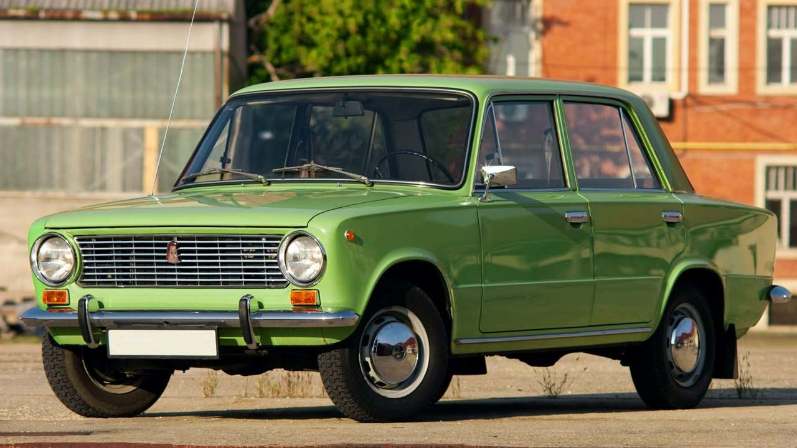
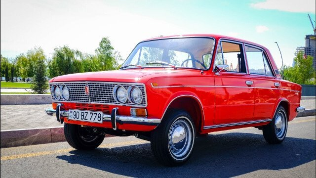
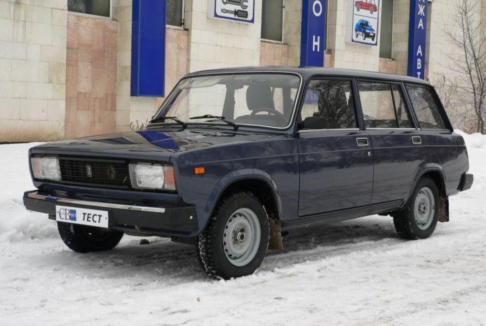

В 1966 году между Советским Союзом и итальянской компанией «Фиат» было подписано соглашении о совместном строительстве автомобильного завода и выпуске на нем модели Fiat 124. Уже через год в Тольятти началось строительство нового предприятия, а в 1970 году в конвейера завода сошли первые машины.
Седан, получивший название ВАЗ-2101 «Жигули» ("копейка"), имел типичную для тех лет классическую компоновку, а за время подготовки к серийному выпуску в его конструкцию было внесено множество изменений. Например, в отличие от «Фиата», советский автомобиль оснащали двигателем не с нижним, а с верхним расположением распредвала. Сам мотор объемом 1,2 литра развивал 64 л. с. Кроме того, «Жигули» получили усиленное сцепление, модернизированную четырехступенчатую коробку передач, измененную конструкцию задней зависимой подвески, задние барабанные тормоза вместо дисковых.
В конце семидесятых – начале восьмидесятых «копейка» стоила 6600 рублей. «Жигули» продвались не только в СССР, но и поставлялись на экспорт под названиями Lada 1200 и Lada 1300. Для рынков Великобритании и некоторых других стран делали и версии с правым рулем.
Всего было выпущено 2 710 930 «Жигулей» первой модели.
В 1971 году, через год после начала производства первой модели «Жигулей», с конвейера Волжского автозавода начали сходить универсалы ВАЗ-2102. Технически этот автомобиль практически не отличался от «копейки», за исключением усиленной задней подвески и раскладывающегося заднего сиденья. Аналогичная грузопассажирская модификация была и у прототипа «Жигулей» — итальянской модели Fiat 124. На экспорт советский автомобиль поставлялся под маркой Lada.
На машину устанавливали 1,2-литровый мотор мощностью 62–64 л. с. в паре с четырехступенчатой коробкой передач.
Цена модели ВАЗ-2102 составляла 7 400 рублей. Производство универсалов завершилось в 1985 году. Всего было выпущено 666 989 машин.

При запуске в производство ВАЗ-2101 было решено, что у машины будет более дорогая, как бы сейчас сказали, люксовая версия. Итальянские партнеры ВАЗа предлагали взять за основу седан Fiat 125, но при внешнем сходстве со 124-й моделью (прототипом «копейки»), это были разные по конструкции машины. В итоге, новый ВАЗ-2103 был сделан на базе модели 2101. Разработка «тройки» велась совместно с итальянцами, которые представили свой вариант машины — Fiat 124S.
Третья модель отличалась от первой внешним оформлением кузова, светотехникой, другой отделкой интерьера, новой передней панелью приборов с тахометром, вакуумным усилителем тормозов. Еще одно отличие — двигатель объемом 1,5 литра и мощностью 72 л. с. Первая партия машин была выпущена в конце 1972 года, а полноценное серийное производство стартовало в 1973 году.
В 1983 году цены на модель ВАЗ-2103 составляли 7 500 рублей. Всего до 1984 года, когда завершился выпуск модели, было сделано 1 304 866 машин.

Универсал ВАЗ-2104 был запущен в серийное производство в 1984 году как замена модели 2102. За основу для создания машины был взят заднеприводный седан ВАЗ-2105, «четверка» отличалась от него задней частью кузова, складывающимся задним диваном и топливным баком увеличенного до 45 литров объема. На «четверках» также впервые в отечественном автопроме был применен «дворник» заднего с омывателем.
Первоначально универсал оснащался карбюраторным двигателем объемом 1,3 литра (69 л. с.) и четырехступенчатой коробкой передач. В последующие годы на ВАЗ-2104 ставили карбюраторный 1,5-литровый двигатель и впрысковые силовые агрегаты объемом 1,5, 1,6 и 1,7 литра. Со временем пятиступенчтая «механика» была заменена четырехступенчатой.
В начале 1990-х годов машина получила переднюю панель и сиденья от «семерки». На экспорт автомобиль поставлялся под именами Lada Combi, Lada Riva Estate (в Великобританию), Lada Nova Kombi (в Германию), Lada Signet Wagon (в Канаду), Lada Kalinka Olympe (во Францию).
В 1991 году цена ВАЗ-2104 составляла 9100 рублей.Всего было выпущено 1 миллион 142 тысячи «четверок».